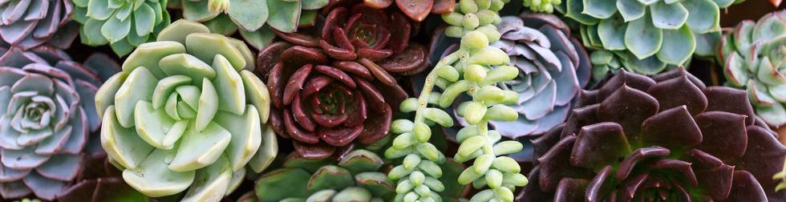

Welcome to Succulent club 
What is succulents?
Succulents, are plants with parts that are thickened, fleshy and engorged, usually to retain water in arid climates or soil conditions.
The word "succulent" comes from the Latin word sucus, meaning juice, or sap. Succulent plants may store water in various structures, such as leaves and stems. Some definitions also include roots, thus geophytes that survive unfavorable periods by dying back to underground storage organs may be regarded as succulents.
In horticultural use, the term "succulent" is sometimes used in a way which excludes plants that botanists would regard as succulents, such as cacti. Succulents are often grown as ornamental plants because of their striking and unusual appearance, as well as their ability to thrive with relatively minimal care. (cite from wiki)